Graphic Design
Visual storytelling.
Selected work across event communication, motion design and editorial projects.
Event communication
Posters created for clients’ events as part of wider communication projects. Each composition translates the atmosphere of the event into a distinct visual direction, balancing expressive graphics with a clear hierarchy of information.
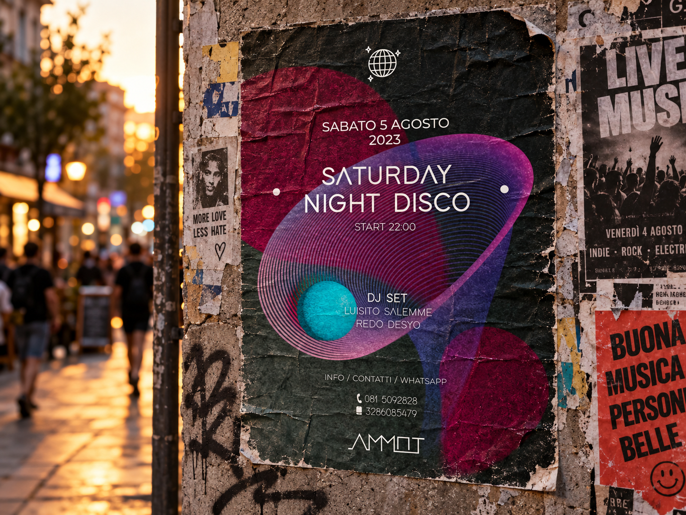
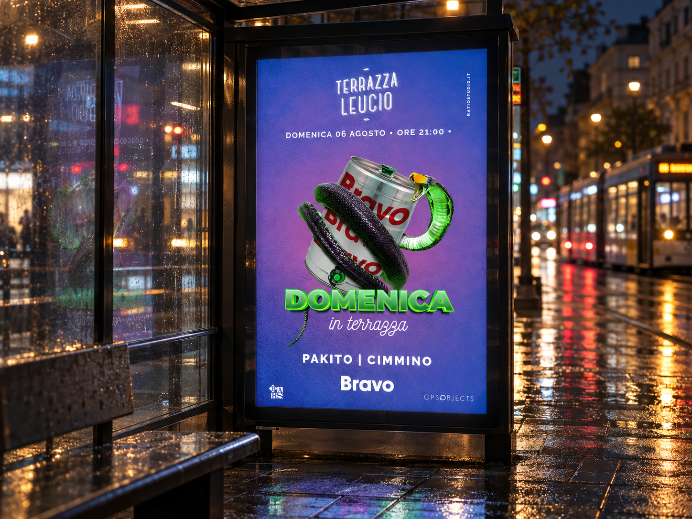
Decathlon — a new life for sports equipment
A marketing video promoting an initiative to bring used sports equipment to Decathlon in exchange for vouchers. Pixel art and a playful visual narrative make the message immediate, connecting the return of old equipment with the opportunity to keep moving.
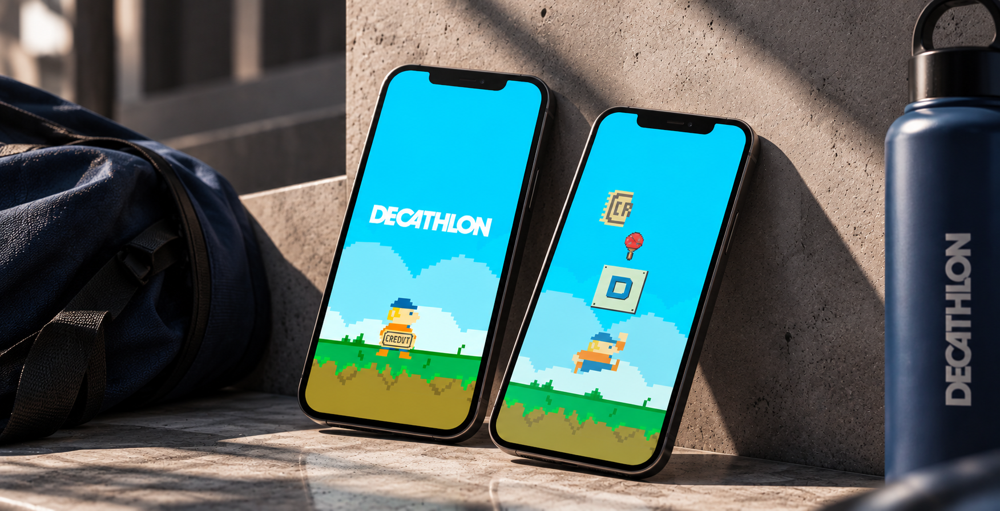
Decathlon / Motion design
Keep moving. Give it a new life.
A playful invitation to turn unused sports equipment into new possibilities.
Play the video · sound availableMACROMONDO — editorial design
An editorial project exploring the small world of insects through photography, illustration and page design. I created all the content inside the book, including the photographs and illustrations, shaping a visual narrative that moves between observation and interpretation.
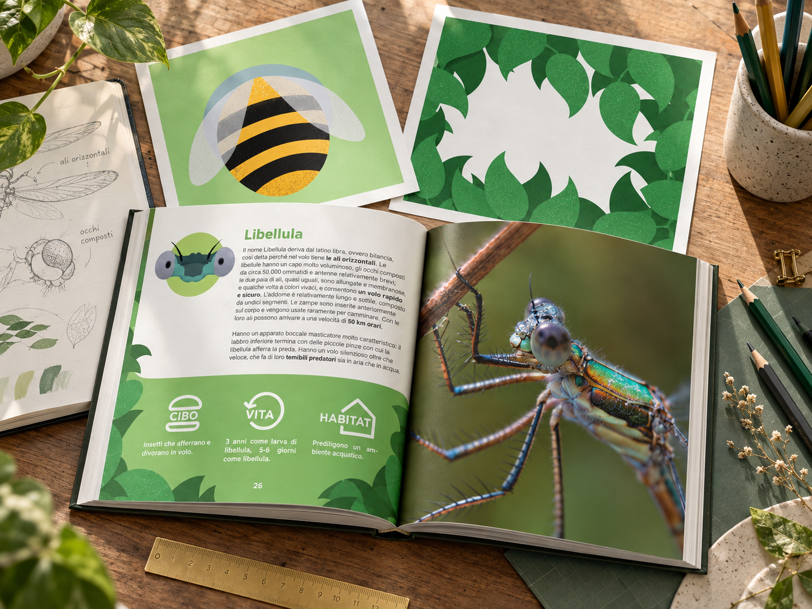
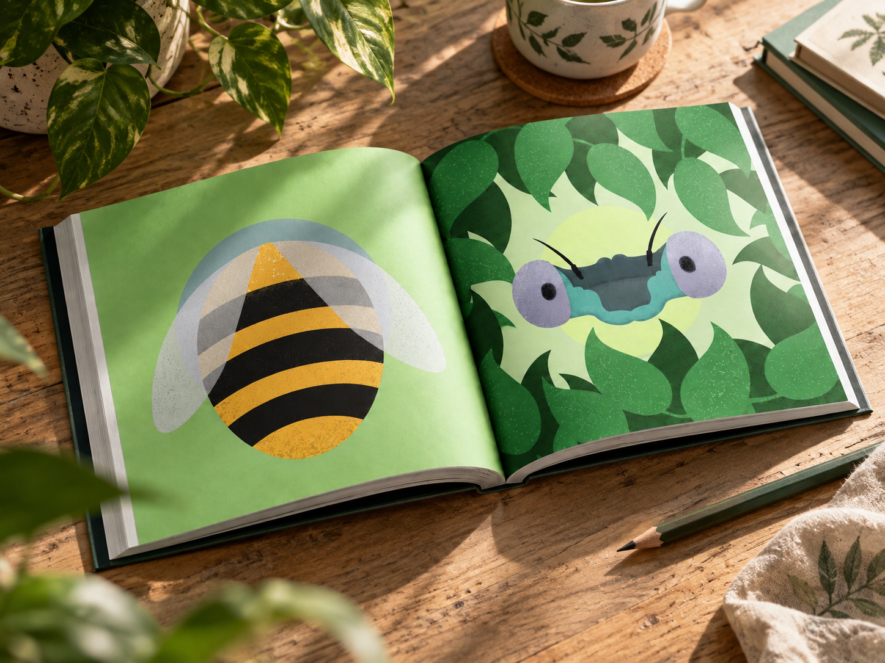
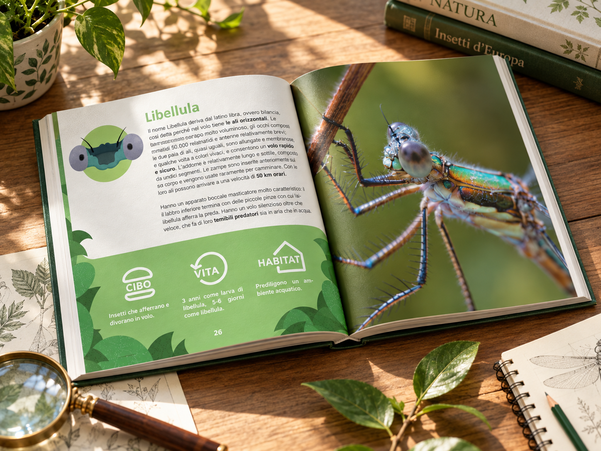
BIGA — Good even at home.
A pizza box that continues the conversation after delivery. Clear instructions and an informal tone explain how to bring warmth and crispness back to the pizza, turning practical packaging into a useful part of the experience.
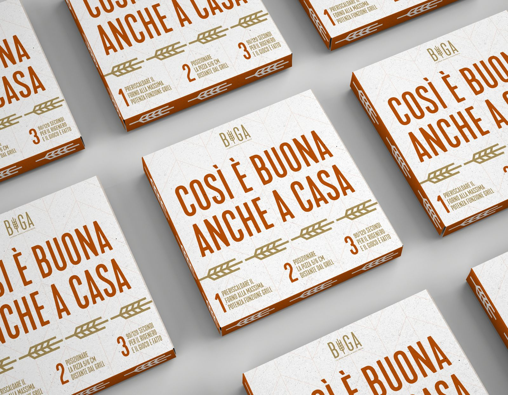
Sunrise — an invitation to begin.
An inauguration invitation for Sunrise Fish Bar. Deep blue, warm yellow and generous spacing bring the brand’s seaside character into a composition that gives the opening details a clear hierarchy.
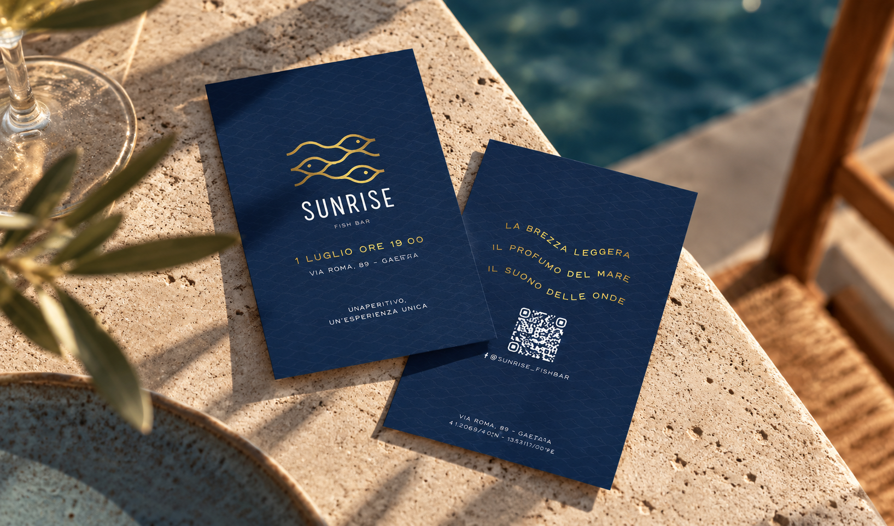
Ratio — a playful Easter greeting.
An Easter reel created for the agency where I worked. A small animated intervention transforms the wordmark into a seasonal greeting, keeping the agency’s identity at the centre of the message.
Ratio / Seasonal motion
A little surprise in the logo.
A short greeting built around colour, movement and the shape of an Easter egg.
Play the video · sound availablePOKEAH — time to play.
A placemat designed to make the wait part of the meal. Games, illustrations and a lively palette invite guests to interact with the printed surface while their food is being prepared.
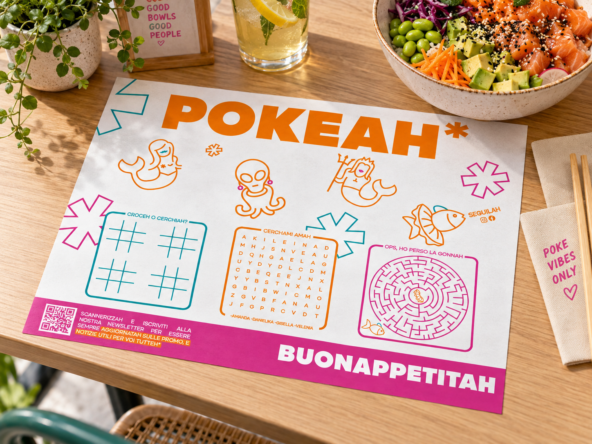
AMMOT — summer to wear.
T-shirt graphics for a venue bringing together beach life, dining and events. Sunsets, palm trees and warm colours translate its atmosphere into two wearable compositions with a relaxed, retro character.
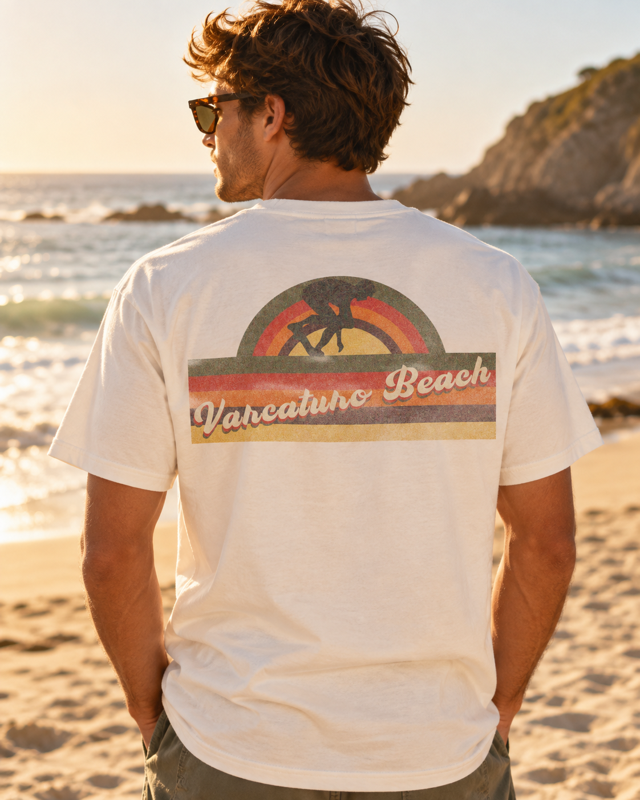
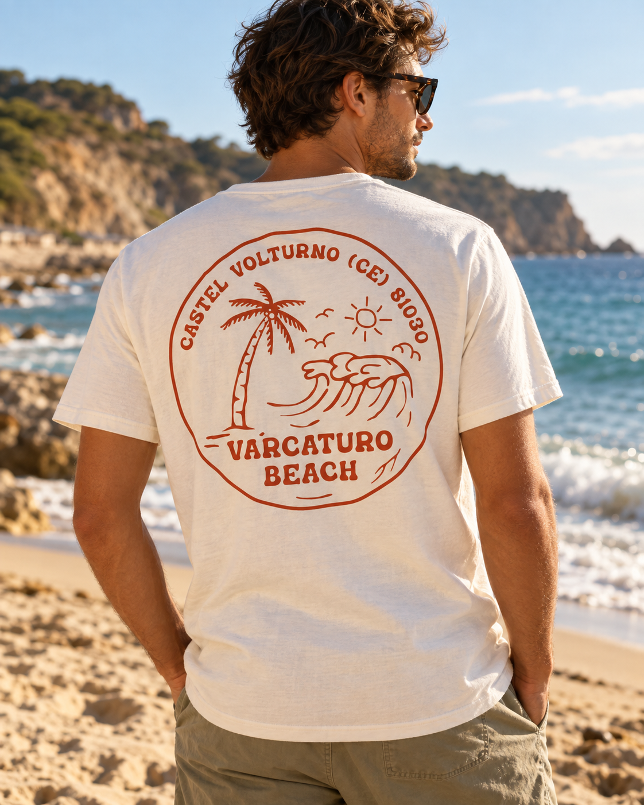